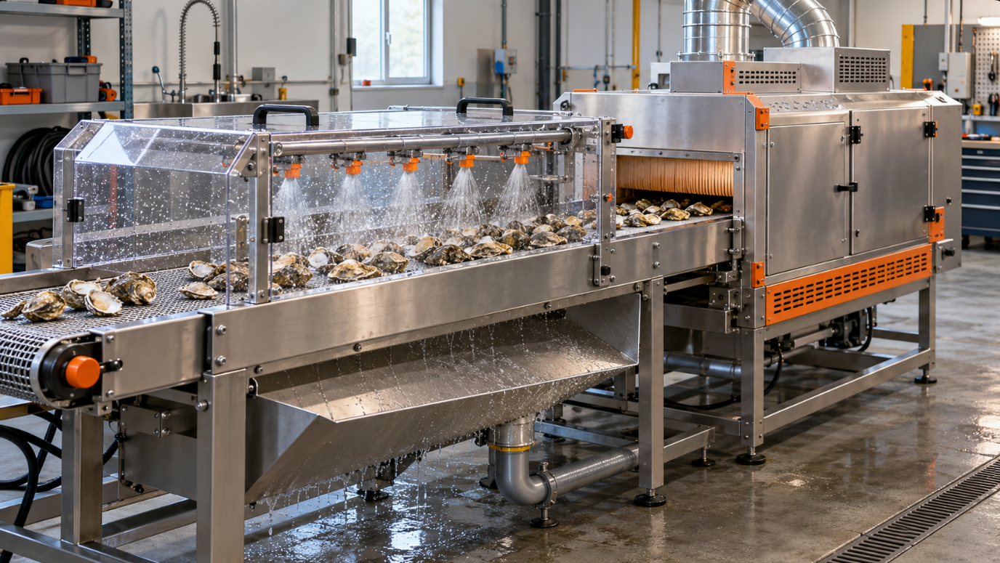
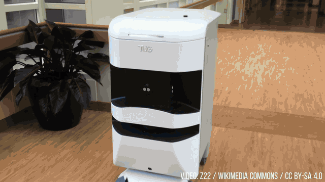
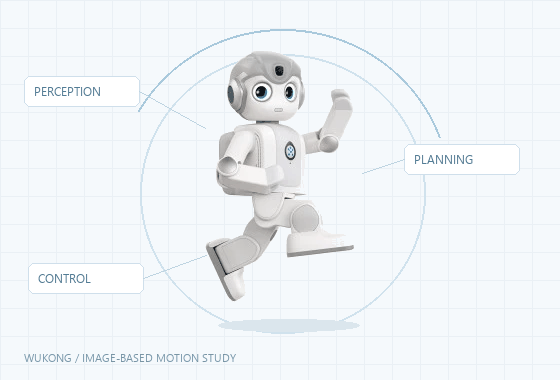
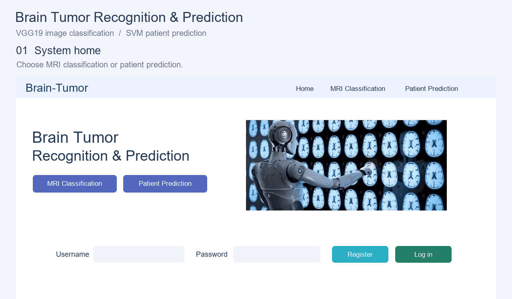
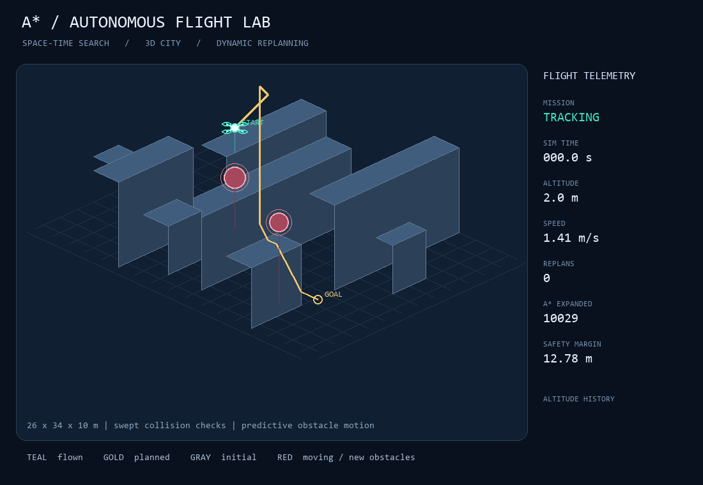
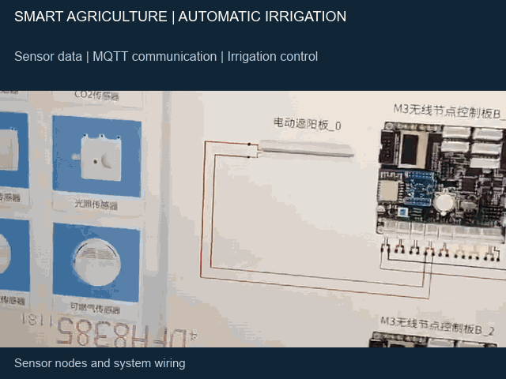
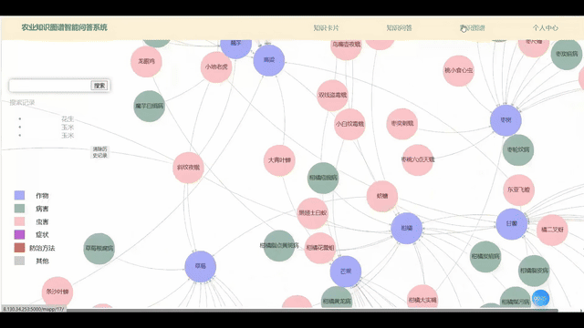
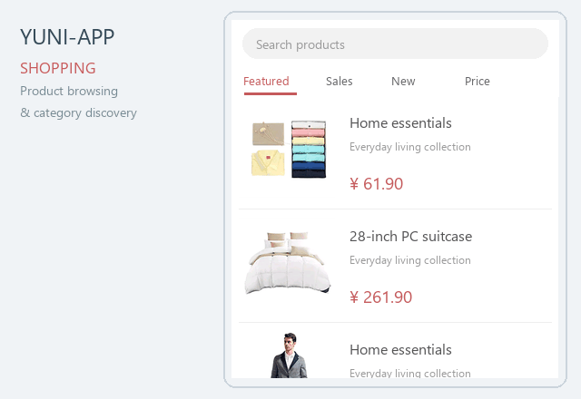

The University of Manchester
MSc Robotics
SOFTWARE ENGINEER / ROBOTICS ENGINEER
Hello, I’m
I’m Xintong Yu, an aspiring robotics engineer focused on robotic software, perception pipelines and mobile robot prototyping.
I enjoy turning algorithms into reliable systems through hands-on integration, debugging and collaboration, especially in autonomous navigation and manipulation.
MSc Robotics
BEng · Computer Science and Technology
Average 90.89/100GPA 4.02/5
Main coursesEmbedded Systems 100 · Probability & Statistics 98 · Computer Architecture 95 · Data Mining & Analysis 93 · Linear Algebra A 91
Applied Sciences, 2024, 14(16), 6862.

Utility model patent · China
A utility-model design combining waste-shell rinsing and drying in one piece of equipment.
Patent summaryComputer software copyright · Co-owner · China
An agricultural Q&A system supporting visual exploration of a knowledge graph.

A video presentation exploring industrial and service robots and their role in sustainable development.

Modular LLM agents connecting perception, memory and decision-making with Python / ROS2 robot control.
2025.09 – 2026.02

MRI-based classification and prediction with VGG19 and SVM, delivered through a web-based system.
2025.02 – 2025.06

A* search, Monte Carlo analysis and MATLAB simulation for aircraft trajectory planning.
2022.12 – 2024.07

Soil-moisture sensing and MQTT communication with CVM to switch irrigation automatically.
2023.12 – 2024.01

Interface design, front-end development, back-end and database integration, and system testing.
2023.07 – 2023.11

A mobile shopping app built with Uni-app and Vue, featuring product browsing, category navigation, user accounts and more.
2023.06 – 2023.07
Zhongying Qi'an (Shenzhen) IoT Technology Co., Ltd.
Shandong Juxin New Energy Technology Co., Ltd.
Shandong Liangzou City Development Group Co.
Shandong Zinuo Landscaping Co., Ltd.
Build & integrate
Sense → plan → act
Models & visual understanding
Query · organise · analyse